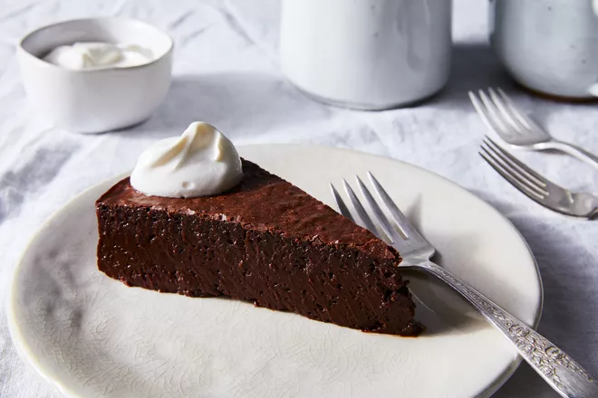

Chocolate Nemesis

Author Notes
Excerpted with permission from Ruth Rogers' cookbook, 'River Cafe London: Thirty Years of Recipes and the Story
of a Much-Loved Restaurant': "Still the best chocolate cake ever."
Ingredients
- 10 eggs
- 2 3/4 cups plus 2 tablespoons (575g) granulated sugar
- 24 ounces (675g) best-quality bittersweet chocolate (70% cocoa solids), broken into small pieces
- 1 pound (450g) unsalted butter, softened
- Crème fraîche, for serving
Directions
- Preheat the oven to 250°F (130°C). Grease a 12-inch (30cm) round cake pan that is 3 inches (7.5cm) deep,
then line the base with parchment paper.
- Whisk the eggs with a third of the sugar with an electric mixer until the volume quadruples—this will take
at least 10 minutes.
- Meanwhile, melt the chocolate and butter together in a heatproof bowl set over a pan of barely simmering
water (the water should not touch the base of the bowl). Remove from the heat.
- Heat the remaining sugar with 9 fluid ounces (250ml) water in a small pan until the sugar has completely
dissolved to a syrup, stirring occasionally. Gently pour the syrup into the melted chocolate, stirring.
- Reduce the speed of the mixer and slowly add the warm chocolate and syrup mixture to the eggs. Increase the
speed and continue beating until completely combined. The mixture will lose volume.
- Pour into the prepared cake pan. Put the pan into a deep baking pan on top of a dish towel to prevent the
cake pan from moving. Fill the baking pan with hot water so that it comes at least two-thirds up the sides
of the cake pan. Bake for 1½ to 2 hours or until set—test by placing the flat of your hand gently on the
surface of the cake.
- Remove the cake pan from the water. Leave the cake in the pan to completely cool before turning out (don't
refrigerate it). Serve with crème fraîche.